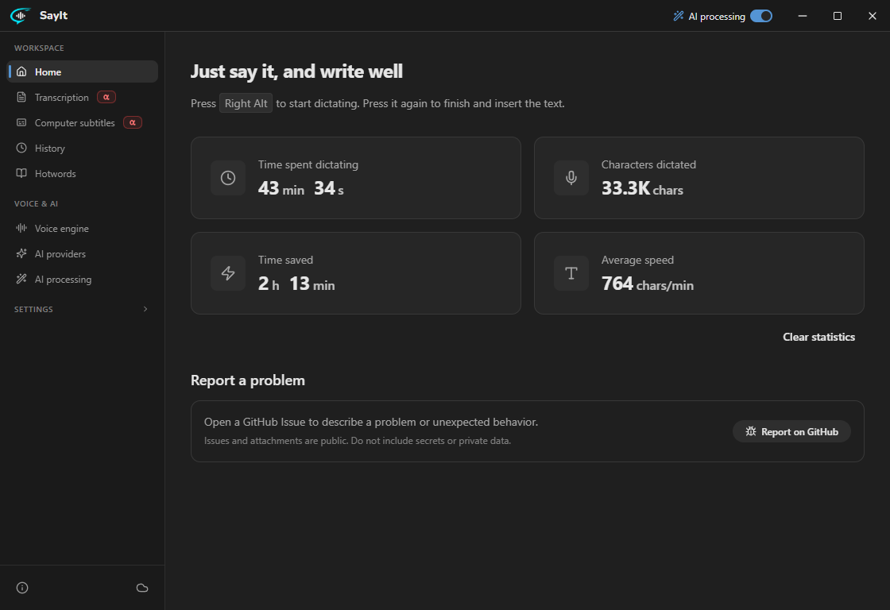

Локальный режим
Распознавание речи полностью на вашем ПК через Vulkan / GPU — без интернета.
- 15 GGUF-моделей с установкой в один клик
- Ноль сетевых запросов без AI-обработки
- Передача словаря терминов в AI-промпт
Открытый голосовой ввод для Windows. Распознаёт речь локально на GPU или через ваш API, убирает слова-паразиты и вставляет чистый текст прямо туда, где стоит курсор.

В отличие от облачных диктовок с принудительной подпиской, SayIt явно показывает маршрут каждого аудиофрагмента.
Распознавание речи полностью на вашем ПК через Vulkan / GPU — без интернета.
Прямые запросы к выбранным ASR и LLM сервисам по вашим ключам, без посредников.
Собственный FastAPI + WebSocket бэкенд для команды или домашнего сервера с GPU.
SayIt адаптируется под активное окно, учитывает текст вокруг курсора и выполняет голосовые команды над выделенным фрагментом.
Считывает текст рядом с курсором (пропуская поля паролей), применяет правила под конкретные программы и редактирует выделенный текст голосом.
Захват системного звука через WASAPI loopback без лишних драйверов. Двойные субтитры (оригинал + перевод) для видео и звонков поверх всех окон.
Встроенные FFmpeg и FFprobe превращают аудио и видео в TXT и Markdown локально или через облачный профиль без внешней установки кодеков.
Автоматическое или ручное усиление до 20x для тихих микрофонов, приглушение звука Windows во время записи и защита от виртуальных устройств.
Локальный архив по дням с поиском, избранным, воспроизведением аудиозаписей и повторным распознаванием любой диктовки другой моделью.
Экспорт настроек, словарей, AI-пресетов и архива записей для переноса на другой ПК, плюс резервное копирование по расписанию на WebDAV.
Нативное приложение на Tauri с 11 темами оформления, статистикой использования и детальной настройкой каждой детали.
Загружаются и удаляются прямо в SayIt:
Потоковые и пакетные провайдеры:
Для редактуры, перевода и команд:
Бэкенд объединяет FastAPI, потоковый WebSocket, выбор ASR-движка (Qwen3-ASR, FireRedASR2 или GigaAM) и опциональную AI-обработку через OpenAI, Azure OpenAI, Groq или Ollama.
git clone https://github.com/catgirl3d/SayIt.git
cd SayIt/server
cp .env.example .env
# Add optional LLM keys in .env
docker compose up -d --buildПолностью открытый код под лицензией AGPL-3.0. Без подписок и привязки к одному провайдеру.